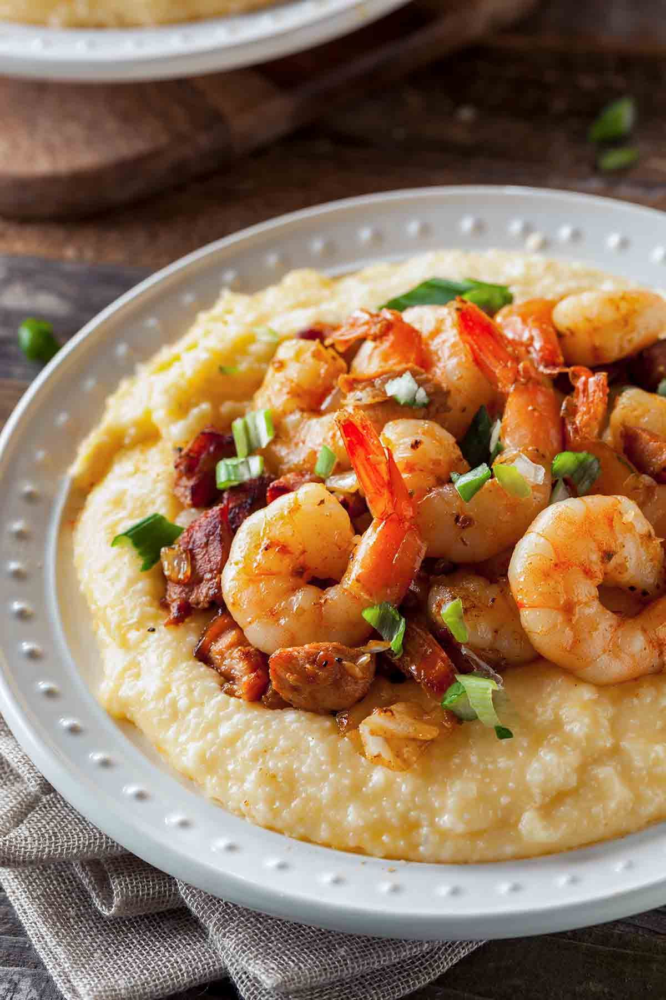

Shrimp and Grits

Description
One of my favorite dishes for a quick lunch.
Ingredients
- 1 cup of grits
- 2 cups of water
- 2 cups of cheddar cheese
- 1 lb raw, peeled, and deveined shrimp
- 1/2 lb thick cut bacon
- 1 cup chopped scallions for garnish
Directions
-
Grits
- Add water to a boiler on high heat until at a rolling boil.
- Add grits and reduce heat to med and stir often.
- Once thickened add cheese, stir well, and remove from heat.
-
Shrimp
- Preheat skillet on med-high heat and add your favorite cooking oil.
- Add shrimp to skillet and season with salt and black pepper.
- Cook for 2-3 mins making sure to flip about half way through.
-
Bacon
- Preheat skillet on med-high heat.
- Chop bacon into roughly 1/2" pieces and add to skillet.
- Cook bacon until crispy.
-
Plating
- Add a generous ladle of grits into a bowl.
- Add shrimp to your heart's content.
- Garnish with chopped scallions and bacon.
- Enjoy!
Return Home